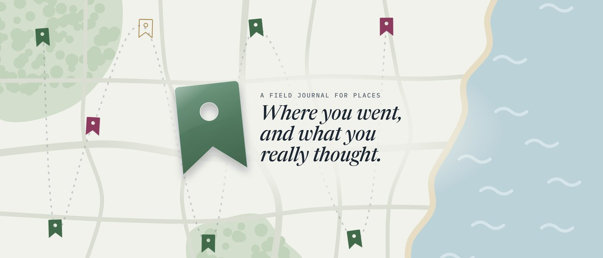

Press
Press kit
Everything you need to write about Placemoir: the facts, descriptions you can quote, artwork and screenshots, and a way to reach the person who made it.
At a glance
| Name | Placemoir |
|---|---|
| Say it | PLACE-mwahr, like “place” plus “memoir”. How to say it |
| Tagline | A field journal for places |
| What it is | A private journal for the places you go: restaurants, cafés, hotels, parks, museums and anywhere worth remembering |
| Platforms | iPhone, iPad and iPhone Duo, with Liquid Glass design |
| Requires | iOS 26 or iPadOS 26 or later |
| Price | Free to download, with up to 25 journal entries. Placemoir Premium is $9.99 a year or $1.29 a month (USD), with Family Sharing |
| Privacy | No account, no ads, no tracking. Your journal stays on your devices and in your own iCloud |
| Category | Travel, and Food & Drink |
| Accessibility | Tested with VoiceOver and Voice Control |
| Released | , version 1.0 |
| App Store | apps.apple.com/app/placemoir/id6829224969 |
| Developer | Tweeting Birds LLC, Georgia, USA |
| Website | placemoir.app |
Descriptions
Use these as they are, or trim them to fit.
One line
Placemoir is a private field journal for the places you go: rate them, add notes and photos, and keep it all to yourself.
Short, about 50 words
Placemoir is a private field journal for places. Rate a restaurant, hotel or museum with one tap (“I’ll be back” or “Never again”) or in half stars, then add notes, photos, voice memos and the day’s weather. There’s no account and no ads, and your journal lives in your own iCloud.
Long, about 150 words
Placemoir is a field journal for the places you go, written for an audience of one.
Review sites are written for strangers. Placemoir is written for future you: the café you still think about, the hotel you’d book again, the museum you’d skip next time. Rate each journal entry your way, with one tap on “I’ll be back” or “Never again”, or with half-star detail and “Would you go back?”. Every entry keeps the place, the date, your notes, photos, voice memos, files, and the weather that day, filled in for you.
Everything lands on one map and in search that remembers the words in your notes. Go back somewhere and Placemoir adds a second journal entry, so you can see how it changed.
There’s no account, no ads and no tracking. Your journal stays on your devices and syncs through your own iCloud. Bring places in from Google Maps or Photos for free, and export everything whenever you like. Placemoir is made for iPhone, iPad and iPhone Duo.
Features
- Rate it your way. Simple rating is one tap: I’ll be back, or Never again. Detailed rating is one to five stars in half steps, plus “Would you go back?”
- Find the place, fast. Search Apple Maps, or let Placemoir suggest where you’re standing.
- The weather that day, from Apple Weather, even if you write the entry up a week later.
- Photos, voice memos and files kept with each journal entry.
- A map of everywhere: green for places you’d go back to, plum for the ones you wouldn’t, gold for your Want to go list.
- Search that remembers names, neighborhoods and words from your notes.
- Every journal entry for a place, together, each with its own date, rating and notes, plus On this day.
- Quick capture: long-press + to save a place in seconds and finish it later.
- Bring what you have: free import from Photos, Google Maps and, with an AI assistant’s help, any other app, through an open archive format.
- Yours to take with you: export the whole journal, every photo and file included, at any time.
- Private by design: no account, no ads, no tracking, and a Face ID lock.
- Made for every Apple screen: iPhone, iPad and iPhone Duo, light and dark, with an alternate app icon.
Pricing
- Free: up to 25 journal entries, with everything except weather auto-fill and the alternate bookmark icon.
- Placemoir Premium: $9.99 a year or $1.29 a month in the US, with local App Store pricing elsewhere. Unlimited journal entries, weather auto-fill and the bookmark icon. Works with Family Sharing.
- Always free: reading and editing your journal, every import, export, and Delete all data. If a subscription ends, nothing is locked.
A note on wording: please say Placemoir is “stored in your own iCloud” rather than “end-to-end encrypted”. iCloud data is end-to-end encrypted only for people who turn on Apple’s Advanced Data Protection.
The story
Placemoir started with a podcast. On episode 456 of The Talk Show, John Gruber and Joanna Stern talked about wanting a field journal for the places they go, such as restaurants and hotels (listen at 1:30:43). Nate Bird heard it and built the app: a private notebook for places, with no feed, no followers and nothing to perform for.
The name is “place” plus “memoir”. A memoir is the story of what you remember; Placemoir keeps the places behind those memories.
Quotes
“Review sites are written for strangers. I wanted something written for me: a place to remember the atmosphere and excellent service at a restaurant or the hotel I never want to stay at again.”
“It’s your journal. There’s no account and no server in the middle. Your journal stays on your devices and in your own iCloud, and you can export or delete all of it any time.”
“‘Never again’ turned out to be the most useful thing I write down. It saves me from making the same mistake twice.”
“It is surprisingly fun to reminisce on all the wonderful places I visited with family and friends.”
About Tweeting Birds
Tweeting Birds LLC is an independent software studio in Georgia, USA, founded by Nate Bird. It makes small, careful apps for iPhone and iPad that respect your time and your privacy. Placemoir is its newest app, alongside Quips.
About the maker
Nate Bird is an indie developer in Atlanta, Georgia. He has built software since the mid-2000s, and now uses agentic AI to turn the apps he imagines into real ones faster than ever. Find him on Micro.blog as @nate or at natebird.co.
Artwork and screenshots
All of these are in the press kit ZIP, at full size and in light and dark. Screenshots are from the pre-release build.





Please write the name as Placemoir, one word with a capital P, and don’t recolor, stretch or redraw the icon or logo. You’re welcome to use the artwork and screenshots in coverage of Placemoir.
Press contact
Want to try it, or ask a question?
Placemoir is made by one independent developer, Nate Bird. Write for a promo code for a year of Placemoir Premium, an interview, or anything the kit doesn’t answer.
Email nate@tweetingbirds.com